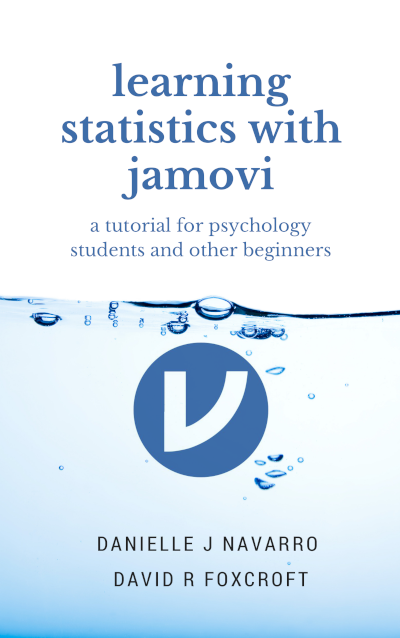

learning statistics with jamovi
This textbook covers the contents of an introductory statistics class, as typically taught to undergraduate psychology, health or social science students. The book covers how to get started in jamovi as well as giving an introduction to data manipulation. From a statistical perspective, the book discusses descriptive statistics and graphing first, followed by chapters on probability theory, sampling and estimation, and null hypothesis testing. After introducing the theory, the book covers the analysis of contingency tables, correlation, t-tests, regression, ANOVA and factor analysis. Bayesian statistics are touched on at the end of the book.
Citation: Navarro DJ and Foxcroft DR (2022). learning statistics with jamovi: a tutorial for psychology students and other beginners. (Version 0.75). DOI: 10.24384/hgc3-7p15